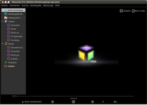
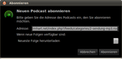
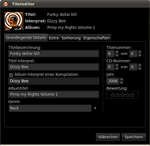
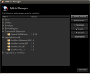
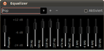

Moovida Pro
Archivierte Anleitung
Dieser Artikel wurde archiviert, da er - oder Teile daraus - nur noch unter einer älteren Ubuntu-Version nutzbar ist. Diese Anleitung wird vom Wiki-Team weder auf Richtigkeit überprüft noch anderweitig gepflegt. Zusätzlich wurde der Artikel für weitere Änderungen gesperrt.
Zum Verständnis dieses Artikels sind folgende Seiten hilfreich:
Moovida Pro  ist ein kommerzieller Desktop-Media-Player, der im Gegensatz zu Archiv/Moovida diverse lizenzrechtlich geschützte Audio- und Videoformate, die Wiedergabe von DVDs - auch von Iso-Images - und CDs beherrscht. Zusätzlich unterstützt das Programm die Wiedergabe von Podcasts und Internetradio. Die integrierte Medienverwaltung hilft beim Organisieren von Audio- und Videodateien. So können u.a. Daten mit dem iPod synchronisiert werden. Zur Wiedergabe kommt Dolby Digital 5.1 zum Einsatz.
ist ein kommerzieller Desktop-Media-Player, der im Gegensatz zu Archiv/Moovida diverse lizenzrechtlich geschützte Audio- und Videoformate, die Wiedergabe von DVDs - auch von Iso-Images - und CDs beherrscht. Zusätzlich unterstützt das Programm die Wiedergabe von Podcasts und Internetradio. Die integrierte Medienverwaltung hilft beim Organisieren von Audio- und Videodateien. So können u.a. Daten mit dem iPod synchronisiert werden. Zur Wiedergabe kommt Dolby Digital 5.1 zum Einsatz.
|  |
| Moovida-Pro |
Installation¶
Nach dem Erwerb des Produktes auf der Herstellerseite lädt man sich dieses aus "Meine Produkte" herunter und installiert [1] das .deb-Paket.
Hinweis!
Fremdpakete können das System gefährden.
Anschließend ist es im Menü unter "Anwendungen -> Unterhaltungsmedien -> Moovida-Pro" zu finden.
Hinweis:
Nach dem Programmstart wird man aufgefordert den erhaltenen Registrierungsschlüssel einzugeben.
Bedienung¶
Nach dem Start ist in der Systemleiste ein Symbol zu finden, über welches der Player gesteuert werden kann. Mit einem  Linksklick wird das Hauptfenster ein- bzw. ausgeblendet. Über einen
Linksklick wird das Hauptfenster ein- bzw. ausgeblendet. Über einen  Rechtsklick erreicht man die wichtigsten Funktionen zur Wiedergabe.
Rechtsklick erreicht man die wichtigsten Funktionen zur Wiedergabe.
Über die Maustasten sind im Programm diverse Funktionen zu erreichen.

DVD-Wiedergabe¶
Nach dem Einlegen der DVD erscheint in Moovida Pro das DVD-Symbol , gefolgt vom Titel des Speichermediums. Wählt man die DVD an, werden vom Programm das DVD-Cover sowie kurze Zusammenfassung des Filminhalts angezeigt. Über "Wiedergabe" wird der Film gestartet. Zusätzlich kann man über "Backup DVD" Sicherheitskopien anfertigen.
|  |
| Podcast |
Podcast¶
Podcasts können über "Podcast abonnieren" hinzugefügt werden. Hier die gewünschte Adresse, z.B. http://deimhart.net/index.php?/feeds/categories/2-sendung-mp3.rss eintragen und festlegen, wie mit neuen Podcasts verfahren werden soll. Über die Schaltfläche "Auf neue Folgen überprüfen" können hinterlegte Podcasts heruntergeladen werden.
Internetradio¶
Über "Station hinzufügen" können Internet-basierte Hörfunksendungen hinzugefügt werden. Diese werden nach Genre sortiert in der Liste angezeigt,
|  |
| Titeleditor |
Titeleditor¶
Der Titeleditor wird, nach der Anwahl der gewünschten Video- bzw. Audiodatei, mit einem Rechtsklick über den Menüpunkt "Eigenschaften" oder durch
E gestartet. Hier kann man die ID3-Tags bearbeiten und Cover integrieren. Zum manuellen Einbinden eines Covers führt man einen Rechtsklick auf das entsprechende Feld aus und folgt den Anweisungen.
Konfiguration¶
Ansicht¶
Über "Ansicht" kann das Aussehen des Programms angepasst werden.
Einstellungen¶
Allgemeine Einstellungen können unter "Bearbeiten -> Einstellungen" vorgenommen werden. Neben Dateirichtlinien können unter "Quellspezifisch" die hinterlegten Ordner für Videodateien etc. verändert werden. Bereits installierte Erweiterungen können unter dem Menüpunkt "Erweiterungen" (de)aktiviert werden.
|  |
| Erweiterungen |
Erweiterungen¶
Um bereits installierte Erweiterungen zu löschen oder neue zu integrieren, ruft man über "Bearbeiten -> Erweiterungen verwalten..." den gewünschten Dialog auf.
Über "Install Add-ins" können zusätzliche Erweiterungen eingespielt werden.
|  |
| Equalizer |
Equalizer¶
Der Equalizer kann über "Ansicht -> Equalizer" oder die Tastenkombination Strg + E aufgerufen werden.
Werkzeuge¶
Über den Menüpunkt "Werkzeuge" kann man die Programmbibliothek erneut einlesen und fehlende Cover automatisch herunterladen lassen.
Tastenkürzel¶
| Tastenkürzel | |
| Taste(n) | Funktion |
| Strg + N | Neue Wiedergabeliste |
| Strg + I | Medien importieren |
| Strg + L | Ort öffnen |
| F | Vollbild (verlassen) |
| E | Titeleditor |
| F2 | Datei umbenennen |
| Strg + 3 | Equalizer |
| Strg + W | Programm schließen |
| Strg + Q | Programm beenden |
Infobox¶
| Moovida Pro | |
| Sprache: |  |
| Veröffentlichung: | 2011+ |
| Hersteller: | Fluendo S.A. |
| Systemvoraussetzungen: | Intel Pentium 4 / 512+ MB RAM |
| Medien: | Download |
| Läuft mit: | nativ |

- Erstellt mit Inyoka
-
 2004 – 2017 ubuntuusers.de • Einige Rechte vorbehalten
2004 – 2017 ubuntuusers.de • Einige Rechte vorbehalten
Lizenz • Kontakt • Datenschutz • Impressum • Serverstatus -
Serverhousing gespendet von